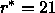
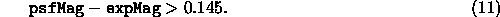
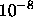
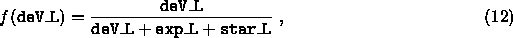
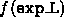
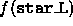
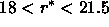
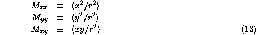
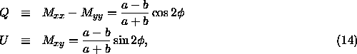

The frames pipeline also provides several characterizations of the shape and morphology of an object.
frames's ``Type'' Determination
The frames pipeline provides a simple star/galaxy separator in its type
parameters (provided separately for each band) and its
objc_type parameters (one value per object); these are set to 3
(galaxy) or 6 (star).
In particular, lupton01a show that the following simple cut
works at the 95% confidence level for our data to  and even
somewhat fainter:

If satisfied, type is set to GALAXY for that band;
otherwise, type is set to STAR. The global type
objc_type is set according to the same criterion, applied to the
summed fluxes from all bands in which the object is detected.
Experimentation has showed that simple variants on this scheme, such as defining galaxies as those objects classified as such in any two of the three high signal-to-noise ratio bands (namely, g, r, and i), work better in some circumstances. This scheme occasionally fails to distinguish pairs of stars with separation small enough (<2'') that the deblender does not split them; it also occasionally classifies Seyfert galaxies with particularly bright nuclei as stars.
Further information to refine the star-galaxy separation further may be used, depending on scientific application. For example, scranton01 advocate applying a Bayesian prior to the above difference between the PSF and exponential magnitudes, depending on seeing and using prior knowledge about the counts of galaxies and stars with magnitude.
The frames pipeline extracts an azimuthally-averaged radial surface brightness profile. In the catalogs, it is given as the average surface brightness in a series of annuli (whose outer radii are listed in Table 7). This quantity is in units of ``maggies'' per square arcsec, where a maggie is a linear measure of flux; one maggie has an AB magnitude of 0 (thus a surface brightness of 20 mag/square arcsec corresponds to  maggies per square arcsec). In the class Profile (Table 6), the number of annuli for which there is a measurable signal is listed as nprof, the mean surface brightness is listed as profMean, and the error is listed as profErr. This error includes both photon noise, and the small-scale ``bumpiness'' in the counts as a function of azimuthal angle.
When converting the profMean values to a local surface brightness, it is not the best approach to assign the mean surface brightness to some radius within the annulus and then linearly interpolate between radial bins. Do not use smoothing splines, as they will not go through the points in the cumulative profile and thus (obviously) will not conserve flux. What frames does, e.g., in determining the Petrosian ratio, is to fit a taut spline to the cumulative profile and then differentiate that spline fit, after transforming both the radii and cumulative profiles with asinh functions. We recommend doing the same here.
Surface Brightness and Inverse Concentration Index
The frames pipeline also reports the radii containing 50% and 90% of the Petrosian flux for each band, petroR50 and petroR90 respectively. The usual characterization of surface-brightness in the target selection pipeline of the SDSS is the mean surface brightness within petroR50.
It turns out that the ratio of petroR50 to petroR90, the so-called ``inverse concentration index'', is correlated with morphology shimasaku01,strateva01. Galaxies with a de Vaucouleurs profile have an inverse concentration index of around 0.3; exponential galaxies have an inverse concentration index of around 0.43. Thus, this parameter can be used as a simple morphological classifier.
An important caveat when using these quantities is that they are not corrected for seeing. This causes the surface brightness to be underestimated, and the inverse concentration index to be overestimated, for objects of size comparable to the PSF. The amplitudes of these effects, however, are not yet well characterized.
Model Fit Likelihoods and Parameters
In addition to the model and PSF magnitudes described above,
the likelihoods deV_L, exp_L, and star_L are also
calculated by frames. These are the probabilities of achieving the
measured  for the de Vaucouleurs, exponential, and PSF fits,
respectively. If one wishes to make use of this trinary scheme to
classify objects, calculation of the fractional likelihoods is recommended:
for the de Vaucouleurs, exponential, and PSF fits,
respectively. If one wishes to make use of this trinary scheme to
classify objects, calculation of the fractional likelihoods is recommended:

and similarly for  and .
A fractional likelihood greater than 0.5 for any of these three profiles
is generally a good threshold for object classification. This works
well in the range ; at the bright end, the
likelihoods have a tendency to underflow to zero, which makes them less
useful. In particular, star_L is often zero for bright stars.
For future data releases we
will incorporate improvements to the model fits to give more
meaningful results at the bright end.
The model fits yield an estimate of the axis ratio and position angle of each object, but it is useful to have model-independent measures of ellipticity. In the data released here, frames provides two further measures of ellipticity, one based on second moments, the other based on the ellipticity of a particular isophote. The model fits do correctly account for the effect of the seeing, while the methods presented here do not.
The first method measures flux-weighted second moments,
defined as:

In the case that the object's isophotes are self-similar ellipses, one
can show:

where a and b are the semi-major and semi-minor axes, and
is the position angle. Q and U are Q and U in the
class PhotoObj
and are referred to as ``Stokes parameters.'' They can be used to
reconstruct the axis ratio and position angle, measured relative to row
and column of the CCDs. This is equivalent to the normal definition of
position angle (East of North), for the scans on the Equator.
The performance of the Stokes parameters are not ideal at
low S/N.
For future data releases, frames will also output variants
of the adaptive shape measures used in the weak lensing analysis of
fischer00, which are closer to optimal measures of shape for
small objects.
A second measure of ellipticity is given by measuring the ellipticity
of the 25 magnitudes per square arcsecond isophote (in all bands). In detail, frames
measures the radius of a particular isophote as a function of angle
and Fourier expands this function. It then extracts from the
coefficients the centroid, major and minor axis, position angle, and average radius of
the isophote in question . It also reports the derivative of each of these
quantities with respect to isophote level, necessary to recompute
these quantities if the photometric calibration changes.
. It also reports the derivative of each of these
quantities with respect to isophote level, necessary to recompute
these quantities if the photometric calibration changes.